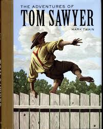
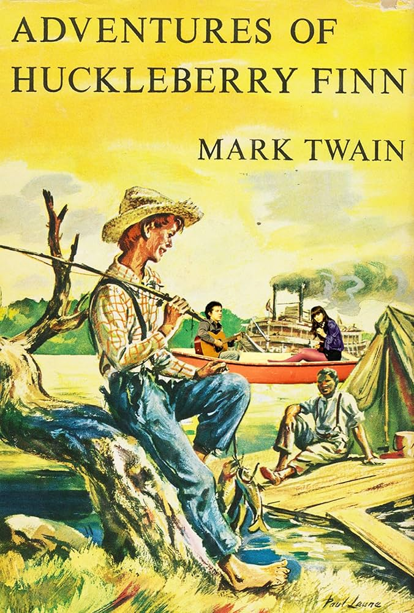
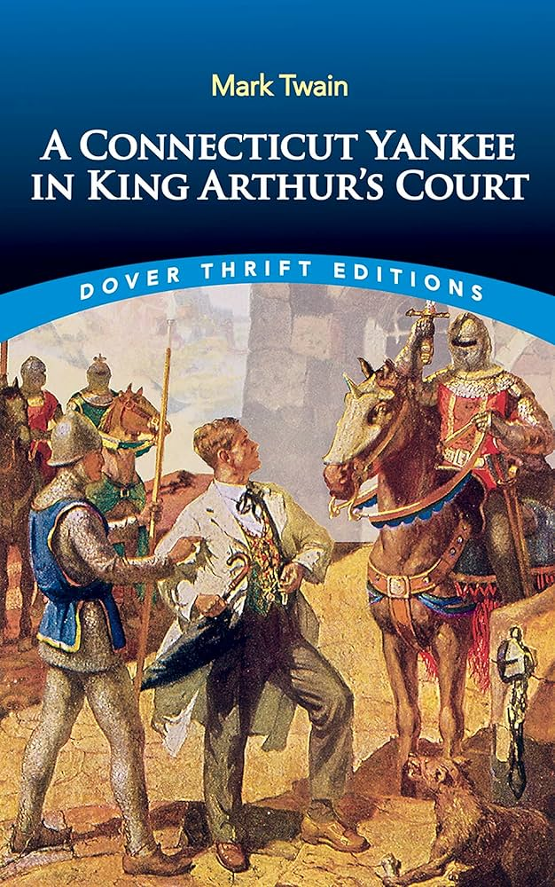
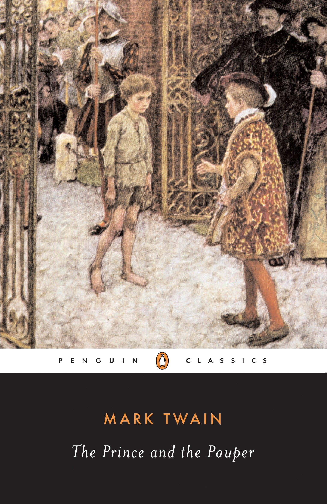

|


|
Agatha Christe , Charles Dickens , Ernest Emingway , Fyodor Dostoyevski , Mark Twain
 kategoriler
kategoriler
 Yazarlar
Yazarlar
En Çok Okunan Mark Twain Kitapları
|
 Tom Savyer'in Maceralarısayfa sayısı: ~ 260 Yazar: Mark Twain okuyucuların puanı: ~ (4.2/5) |
|
 Huckleberry Finn'in Maceralarısayfa sayısı: ~ 340 Yazar: Mark Twain okuyucuların puanı: ~ (4.4/5) |
|
 Bir Yankee’nin Kral Arthur’un Sarayındaki Maceralarısayfa sayısı: ~370 Yazar: Mark Twain okuyucuların puanı: ~ (4.0/5) |
Milyon Sterlik Banknotsayfa sayısı: ~ 80 Yazar: Mark Twain okuyucuların puanı: ~ (4.2/5) |
|
 Prens Ve Dilencisayfa sayısı: ~ 240 Yazar: Mark Twain okuyucuların puanı: ~ (4.1/5) |
İletişim:
 ramazan0058.rc@gmail.com
ramazan0058.rc@gmail.com